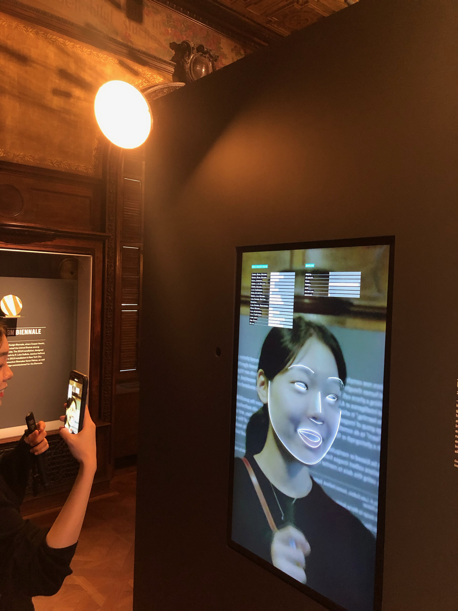

I am
Based in New York City.
The future inspires her to start new projects. She is always looking for new interesting technologies that can change the world and believes designers will play a crucial role in the development of new technologies. She thinks not only a superman or people with super power can save and change the world but anyone with the right passion, goal and dream can change the world, can do meaningful deeds and turn a bad influence into a good one.
Contact: yooj1n05346@gmail.com